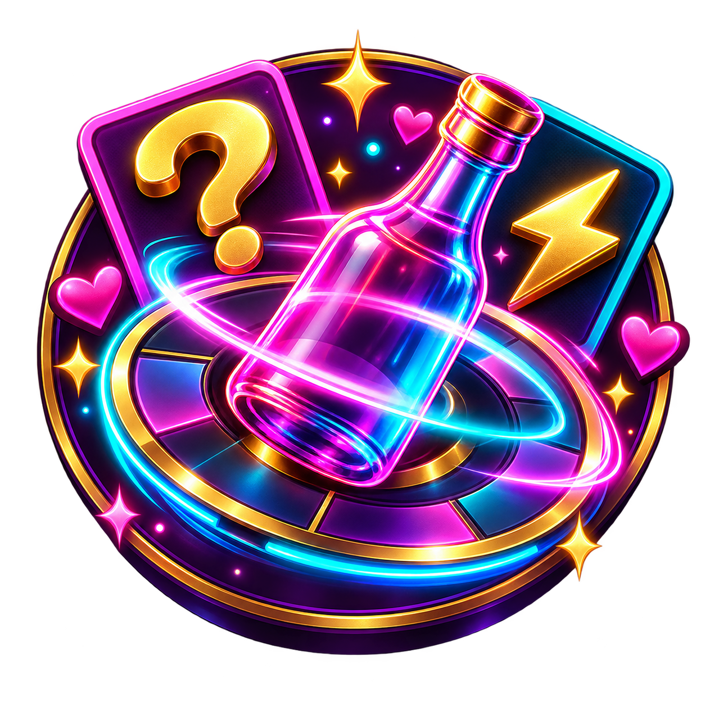

How do I start a game?
Open Spin & Spill, add at least two player names, then tap the spin button to begin.

Spin & SpillWe can help
Need a hand with the game? Start with the quick answers below, or send us a message.
Email supportOpen Spin & Spill, add at least two player names, then tap the spin button to begin.
No. Spin & Spill is made to work offline, so it is ready for trips, sleepovers, and anywhere with a group.
Yes. Open Party Lab in the game and add custom Truth or Dare cards for your group.
Email us with your device model, operating-system version, and a short description of what happened.
Read our Privacy Policy or email the support team.